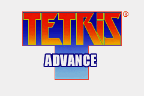

Minna no Soft Series - Tetris Advance (Japan)
EEPROM 4K gbakit Built-In 💾 MultiBoot 🎮 4P Link
Cartridge Identity
- Game Code
BTTJ(FamilyBTT)- Header Title
MSSTETRISADV- Maker / Revision
8N/ rev0- ROM Size
- 4.0 MiB (4,194,304 B)
- Save Media
EEPROM 4K- SHA-256
e95300eb8c6dee8d02ef5726b0bdd1efae36ad04ec778deb1f879938c82e26c1- Engine / SDK Group
comm-027(7 families)
Screenshots

Link Cable & Multiplayer Communications
This title contains detected communication capabilities: 💾 MultiBoot 🎮 4P Link.
Detailed protocol specifications, SIO registers, Joybus commands, and MultiBoot sequences are documented in the Link & Multiplayer Reference.
- Multi-Player SIO (4P)
- 16-bit ring network · SIOCNT (
0x04000128) literals:0x000454,0x0004b0,0x00087c· SIODATA32/SIOMULTI0 (0x04000120) literals:0x000570,0x0005d4,0x000640 - Single-Cart MultiBoot
- Single-Cartridge MultiBoot (Download Play) client/server handler · Thumb SWI 0x25 (
0xDF25):0x01199a,0x096148,0x09e25c,0x0e0a64
Battery Save Support in gbakit
Built-in definition (BTTJ)
gbakit save verify BTTJ save.sav
gbakit save decode BTTJ save.sav
gbakit save fix BTTJ damaged.sav -o repaired.savROM Assets, Compression & Audio
- BIOS Compression
- LZ77 (
0x10): 88 streams · RLE (0x30): 0 streams - ROM Pointer Tables
- 17 tables (5 pointing to validated compressed streams)
- SDK Backup Tags
EEPROM_V124
Asset Map (formatkit.asset-map.v1)
Download BTTJ-r1-040a30700384f277.asset-map.json.gz (132,516 B (129.4 KiB)) Verified PASS · 21.69% coverage
| Metric | Bytes / Value | Entries |
|---|---|---|
| Identified | 909,658 B (888.3 KiB) (21.69%) | 1,230 |
| Mapped | 0 B (0.00%) | 0 |
| Opaque | 0 B (0.00%) | 0 |
| Unknown | 3,284,646 B (3.13 MiB) (78.31%) | 1,203 |
| Total ROM Size | 4,194,304 B (4.00 MiB) | 2,433 |
| Coverage % | 21.69% | — |
| Entries w/ Code Refs | 1,255 / 2,433 (51.58%) | — |
Top Identified Formats: gfx.gba-palette (1,138 · 509,696 B (497.8 KiB)) · compress.bios-lz77 (88 · 285,994 B (279.3 KiB)) · rom.multiboot (2 · 113,544 B (110.9 KiB)) · audio.m4a-song-table (1 · 232 B) · gba.rom-header (1 · 192 B)
Largest unknown Extents (Headerless / Custom Asset Candidates)
| Offset | Size | Shannon Entropy | Code Refs |
|---|---|---|---|
0x00030108 | 197,884 B (193.2 KiB) | 7.533 bits/B | 0 |
0x001523D4 | 70,528 B (68.9 KiB) | 1.019 bits/B | 0 |
0x00060624 | 66,104 B (64.6 KiB) | 7.242 bits/B | 0 |
0x0002158C | 58,224 B (56.9 KiB) | 7.820 bits/B | 0 |
0x001F2B14 | 56,380 B (55.1 KiB) | 1.660 bits/B | 0 |
gzip -dk BTTJ-r1-040a30700384f277.asset-map.json.gz && gbakit map verify rom.gba BTTJ-r1-040a30700384f277.asset-map.json
gbakit assets export rom.gba --asset-map BTTJ-r1-040a30700384f277.asset-map.json -o out/Text, Fonts & Scene Data
- Primary Text Encoding
- Plain ASCII (uncompressed) (
83ASCII strings) - Font & VWF Indicators
- VWF Width Table 1bpp Font · BIOS SWIs: BitUnPack
0x10:17· LZ770x11/12:21· Huffman0x13:4· RLE0x14/15:7 - Scene & Packaging
5ROM pointer tables (≥32 entries,1≥200) ·1relativeu32TOCs ·257OAM metasprite hits
Password System
- Save Media
- Battery-Backed (EEPROM)
- Password Class
- Candidate Static Password Table (
candidate_static_table_no_ui) - Static Table(s)
0x3c9b80
Hardware MMIO Subsystems
ppu_display0x800efc0
Regional Variants & Revisions (Family BTT)
- Minna no Soft Series - Tetris Advance (Japan) (Rev 1) (
BTTJ, 4 MiB)